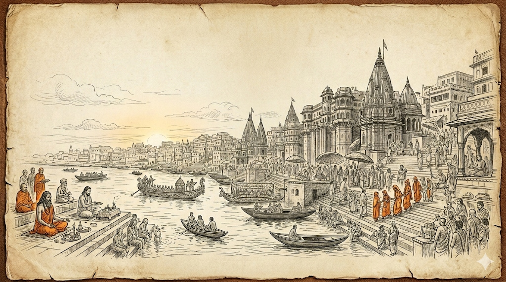
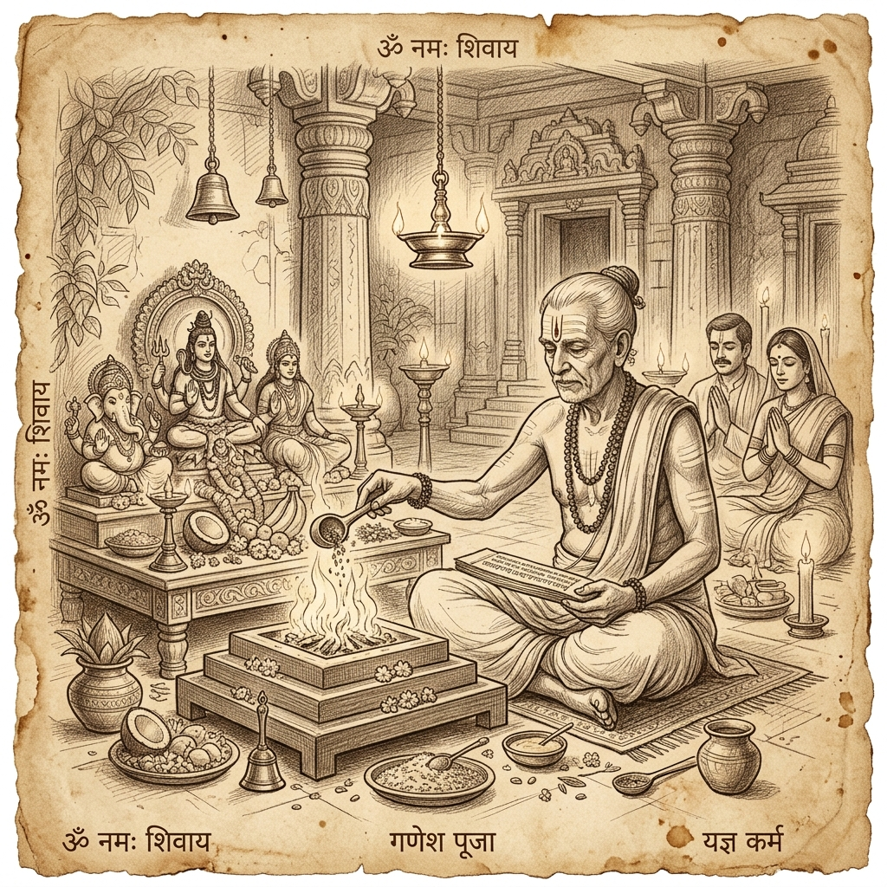

Perform all 16 Sanatan Sanskars with expert Purohits, proper Vedic guidance, and complete devotion.
In Sanatan Dharma, human life is considered a sacred journey. The 16 Sanskars (Solah Sanskar) are profound rites of passage that purify the mind, body, and soul. From conception (Garbhadhana) to the final rites (Antyeshti), these Vedic ceremonies help individuals align with cosmic energies and societal responsibilities.
At Sanatan 16 Sanskar, we are dedicated to preserving these ancient traditions by providing authentic, scripture-based rituals performed by highly learned and certified Pandits.

An auspicious time for Rudrabhishek and seeking blessings. View the full Panchang for detailed Muhurat dates.
Discover the divine rites of passage designed to uplift the human soul across different stages of life.
The baby shower ritual to keep the expectant mother happy and positive.
Learn MoreRituals strictly adhere to ancient scriptures and traditions.
Highly qualified Acharyas and Purohits for every ceremony.
We use 100% pure and natural ingredients for all Pujas.
Astrological guidance and booking support anytime you need.
Book your preferred Pandit ji for any Sanskar or Puja. Our team will guide you with the auspicious dates (Muhurat) and required Samagri.
The 16 Sanskars are rites of passage in a Hindu's life, starting from conception to cremation. They are designed to purify the person, mark significant life transitions, and impart spiritual, cultural, and social values.
Yes, we offer complete packages that include all the necessary pure and authentic Puja Samagri required for the specific Sanskar, so you don't have to worry about the arrangements.
Yes, our Pandits can travel for major ceremonies like Vivah (Marriage). We also provide online Puja services for those living abroad.
Once you contact us, our expert astrologers will help calculate the most auspicious date and time (Muhurat) based on your family's astrological charts (Kundali).
Sanatan Dharma prescribes 16 sacred life rituals (Sanskars) that guide a human being from conception to the final journey. At Sanatan 16 Sanskar, we are dedicated to preserving these ancient Vedic traditions. Based in the holy city of Varanasi (Kashi), our platform connects you with highly experienced and verified Purohits (Acharyas) who perform every ritual with utmost purity, strict adherence to Grihyasutras, and complete devotion. Whether it is a Namakarana (Naming Ceremony), Vivah (Marriage), or Antyeshti (Final Rites), we ensure that you receive the correct Samagri (holy materials) and flawless Vedic chanting for a spiritually fulfilling experience.
सनातन धर्म में गर्भाधान से लेकर अंत्येष्टि तक 16 प्रमुख संस्कारों का वर्णन है, जो मानव जीवन को पवित्र, अनुशासित और आध्यात्मिक बनाते हैं। 'सनातन 16 संस्कार' काशी (वाराणसी) की एक प्रामाणिक संस्था है, जिसका उद्देश्य इन प्राचीन वैदिक परंपराओं को उनके शुद्ध रूप में आप तक पहुँचाना है।
हमारे पास योग्य, विद्वान और अनुभवी आचार्यों (पंडित जी) की एक समर्पित टीम है। पूजा की संपूर्ण और शुद्ध सामग्री से लेकर शास्त्रसम्मत विधि-विधान तक, हम हर एक पहलू का ध्यान रखते हैं ताकि आपका प्रत्येक शुभ और संवेदनशील अवसर पूरी धार्मिक पवित्रता के साथ संपन्न हो सके।